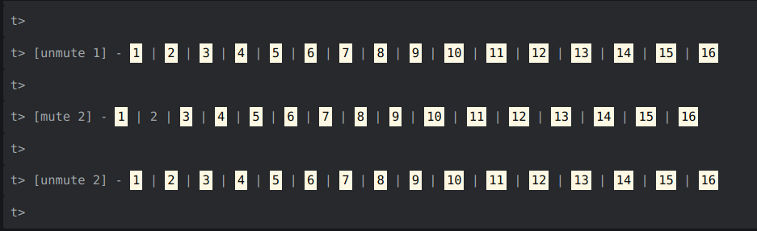

基礎 patterns（節奏）
在 tidal 中發出聲音的基本格式如下：
1 | d1 $ sound "drum" |
可以使用 silence 停止：
1 | d1 $ silence |
有兩種方式可以用 sound 發出聲音：一種是 synths（合成），另一種是 sample（取樣）。
如果使用 sample，可以加入包含 sample 的資料夾名稱（drum），預設會使用資料夾中第一個 sample 檔案，可以用 : 分隔加上數字來替換同一個資料夾中不同的 sample 檔案。
1 | d1 $ sound "drum:1" |
此外，也可以將資料夾和 sample 分為兩部分來指定：
1 | d1 $ sound "drum" # n 1 |
預設 sample 庫
下面列出了一些 tidal 隨附的 sample：
1 | flick sid can metal future gabba sn mouth co gretsch mt arp h cp |
可以在 Dirt-Samples 資料夾中查看 預設庫 中還有哪些其他 sample 可以使用，該資料夾可以在 SuperCollider IDE 中： File > Open user support directory > downloaded-quarks > Dirt-Samples 來找到它。
另外，也可以新增 自訂 samples。
製作一個 sequence（序列）：
1 | d1 $ sound "bd hh sn hh" |
這是因為 tidal 處理時間的方式與一般直覺上的想法不太一樣。
Tidal 中有一個全局的 cycle（週期，類似音樂術語中的 「小節」）在後臺運行，而 tidal 的工作是在一個 cycle 內播放 " " 中的所有聲音，除非我們告訴它不要這樣做（後面會再提到）。
也就是說，tidal 會在一個 cycle 內平均拉開聲音的間距，這表示我們可以很輕易的達成 polyrhythm（稍後會說明）。我們可以使用 setcps 來改變 cycle 的長度 （cycles per second），概念上有點像是音樂中的 bpm （beats per minute）。
1 | setcps 0.6 |
可以使用 d1、d2、d3…d9 來同時播放多個 sequence（就像是不同 DAW 中的不同 track）：
1 | d2 $ sound "sn sn:2 sn bd sn" |
可以用 hush（或按 Ctrl＋.）停止所有正在運行的 pattern，或將 cps 改成負數（記得要將負數放在括弧中）。
1 | setcps (-1) |
可以 solo / mute 指定的 channel（這邊是 track 的意思，d1、d2……）：
1 | d1 $ s "bd sn" |
Tip
如果使用 pulsar 的 tidal plugin，預設了一些常用操作的快捷鍵，如： Ctrl＋1 切換第一個 channel 的靜音等，還有帥帥的狀態圖示：

更多變化
1 | -- 休止 |
我們在這些範例中使用的語法稱為 mini-notation，可以用在 Tidal 中許多地方，不只有 sound 。
常見的 mini-notation 符號像是： | 來選擇隨機選項、 , 來同時播放兩個樣式，以及 ! 複製前一個節奏等。
1 | -- 從兩個 sample 中隨機選擇一個： |
Tip
試試 「bd!3 sn」與「bd*3 sn」之間的差異：
bd!3 sn＝bd bd bd snbd*3 sn=[bd bd bd] sn
References
- Workshop | Tidal Cycles
/home/ewd/Documents/HexoBlog/source/_posts/Tidal-Workshop——Basic-patterns.md